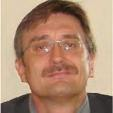

COLLNET 2025 – Website Content
Home Page
Header: "COLLNET 2025: Advancing Research in Webometrics, Informetrics & Scientometrics"
Welcome Message:
Welcome to the 19th International Conference on Webometrics, Informetrics & Scientometrics (WIS) and the 24th COLLNET Meeting. This global conference brings together researchers, scientists, information professionals, and policymakers to discuss the latest developments in scientific collaboration, research evaluation, and information science.
📅 Date: September 19-21, 2025
📍 Venue: Institute of Economic Growth, University of Delhi Enclave, New Delhi, India
🌍 Mode: Hybrid (In-Person & Virtual)
FRAME Glimpses of COLLNET
OLD COLLNET PICTURES (MOVING PHOTOS)
|
🔗 [Register Now] |
(Registration is open! Take advantage of early bird discounts) | Important Dates
| Conference VenueInstitute of Economic Growth University of Delhi Enclave
DELHI- 110007. India
E-mail: collnet2015@gmail.com
|
Meet the People Behind the COLLNET 2025 |
Hildrun KretschmerFounder of the Conference Series
Honorary Professor, Henan Normal University, Xinxiang, China
PD, Dr. sc. phil., Dr. oec., Dipl.-psych.
COLLNET Founder and Co-ordinator (www.collnet.de)
Editor, COLLNET Journal of Scientometrics and Information Management
Homepage: www.h-kretschmer.de
E-mail: kretschmer.h@onlinehome.de
| Dr. Bernd MarkscheffelGeneral Chair,
COLLNET 2024
Technische Universität Ilmenau, Germany
E-mail: bernd.markscheffel@tu-ilmenau.de
|
Dr. P K Jain
Local Chair,&
Organizing Secretary, COLLNET 2025
Librarian Institute of Economic Growth Delhi- India Cell: +91 9899110787 Email: pkjain1310@gmail.com |
Dr. Debal C Kar Program Chair, COLLNET 2025 Librarian, Galgotia University Noida, Delhi, India
|
|
- Dr. Parveen Babbar
Coordinator
COLLNET 2025
Deputy Librarian,
Jawaharlal Nehru University
New Delhi, India
N. K. Wadhwa
Coordinator,
COLLNET 2025
Former Chief Scientist,
CSIR-NPL,
Delhi, India
|
🔗 [Call for Papers] | 🔗 [Program Schedule] 🔗
🔗 [Program Schedule] 🔗
Knowledge Partner |
Supported By |
Sponsors |
FOOTER AS PER COLLENT2015
|
|
|
|
END OF HOME PAGE
2. About COLLNET
Header: "A Platform for Research Collaboration & Innovation"
COLLNET has been a premier platform for scientometric and bibliometric research since its inception in 2000 in Berlin, Germany. Since then, COLLNET has hosted annual conferences in various locations, including
📌 Recent Conferences:
Organised joinly by COLLNET and Université de Strasbourg, Strasbourg, France
12-14th December 2024
https://www.slp.org.in/Collnet2024/
|
Organised joinly by COLLNET, Society for Library Professionals and Special Libraries Association, Asia Community and hosted and organized by East West Universit, Dhaka, Bangladesh
08-10th December 2023
https://www.slp.org.in/collnet2023/
|
Organised joinly by COLLNET, Society for Library Professionals and Special Libraries Association, Asia Community and Co-hosted by Office of Academic Resources (OAR), Chulalongkorn University, Bangkok, Thailand and Thai Library Association, Thailand,
10-12th November 2022
https://www.slp.org.in/collnet2022/
|
co-organised by WISE Lab, Dalian University of Technology (Dalian, China), COLLNET (Berlin, Germany) and the “Committee of Theory of Science of Science and Discipline Construction, Chinese Association for Science of Science and S&T Management”
November 5-8 2019
http://collnet2019.dlut.edu.cn/
|
December 5.-8., 2018
Hosted by University of Macau, Macau SAR China
collnet@socio.org.uk
http://socio.org.uk/collnet2018/
Proceedings at DBT(Digitale Bibliothek Thueringen)
|
July 9.-11., 2017
Hosted by Kent Business School, University of Kent, UK
https://blogs.kent.ac.uk/kbs-news-events/2017/01/13th-international-conference-on-webometrics-informetrics-and-scientometrics-wis-and-the-18th-collnet-meeting-2017/
|
Dezember 12-15, 2016
The conference will be held at Nancy, France
www.slp.org.in/collnet2016
|
November 26-28, 2015
New Delhi, India
Hosted by University of Delhi
|
September 3-5, 2014
Ilmenau, Germany
Hosted by TU Ilmenau
Proceedings at DBT(Digitale Bibliothek Thueringen)
|
August 15-17, 2013,
Tartu, Estonia
Hosted by Estonian Research Council and COLLNET
|
23-26 October, 2012, at Korea Institute of Science and Technology Information, Seoul, Rep. of Korea
|
19-22 October, 2010 Mysore, India |
13-16 September, 2009 Dalian, China
|
Proceedings of WIS 2008 as an online Open-Access e-book (2008-10-22): PDF file with links to papers (245 KB) ZIP file with all papers (21 MB)
The Preliminary Program is available here (since July 9, 2008): PDF (155 kB). The Second Announcement is available here (since March 14, 2008): PDF (75 kB). The COLLNET Journal of Scientometrics and Information Management has published a Special Issue COLLNET 2008 (PDF file of cover and List of Contents).
29 July - 1 August, 2008 Humboldt-Universitï¿œt zu Berlin Institute of Library and Information Science Berlin, Germany |
is available now: PDF (178 kB). Please, visit also the conference homepage: www.collnet-delhi.de 6-9 March, 2007, New Delhi, India
|
2006
June 14
The first announcement of the WISELAB
(Dalian University of Technology, Dalian, China) on the
| International Forum on Science Study and Scientometrics Dalian 24-28 Sep, 2006 |
is available now: PDF (180 kB).The International Workshop on Webometrics, Informetrics and Scientometrics & Seventh COLLNET Meeting in conjunction with the Extra Session on Information Visualization for Webometrics, Informetrics and Scientometrics on 10-12 May, 2006 at LORIA-INIST |
has its own web page: http://collnet.inist.fr
International Workshop on Webometrics, Informetrics and Scientometrics & Seventh COLLNET Mewww.wissenschaftsforschung.deeting in conjunction with the Extra Session on Information Visualization for Webometrics, Informetrics and Scientometrics on 10-12 May, 2006 at LORIA-INIST |
is available now: Nancy-2006-Announcement.pdf (207kB)
Laboratoire Lorrain de Recherche en Informatique et ses Applications Nancy, France, 10-12 May, 2006
|
Sixth COLLNET Meeting and an Extra Session on Collaboration at the last day (28 July, 2005) of the ISSI 2005 Conference |
is now available here: collnetISSI2005.pdf
Stockholm, Sweden, 24-28 July, 2005
2004
February 2
We announce the
| Sixth COLLNET Meeting and an Extra Session on Collaboration at the last day (28 July, 2005) of the ISSI 2005 Conference,
|
Stockholm, Sweden, 24-28 July, 2005
|
| International Workshop on Webometrics, Informetrics and Scientometrics & Fifth COLLNET Meeting held at Central Library of Indian Institute of Technology (IIT), Roorkee, India on 2-5 March, 2004 (Accepted papers as PDF file, 2004-2-27) |
Roorkee, India, 2-5 March, 2004
|
Beijing, China, August 25-29, 2003
|
2002
February 19: 
Friday 20th July, 2001
at The University of New South Wales, Sidney, Australia
(at the end of the ISSI Conference, July 16 - 20, 2001)
20-25th February 2001
at NISTADS, New Delhi, India
1. - 4. September 2000
at the Free University Berlin, Germany
|
Pre-COLLNET Conferences - The Berlin Colloquium on Scientometrics and Informetrics
"Collaboration in Science"
Berlin September 6, 1999
Sponsored by DFG and Association for Science Studies, e.V., Berlin
- The First Berlin Workshop on Scientometrics and Informetrics
"Collaboration in Science"
Berlin August 16-19, 1998
Sponsored by DFG, Free University Berlin and Association for Science Studies, e.V. Berlin.
Proceedings:
Collaboration in Science.
Edited by Frank Havemann and Hildrun Kretschmer.
Berlin: Gesellschaft fï¿œr Wissenschaftsforschung 2000
ISBN 3-934682-31-6, 29,-DM.
Contents (as PDF-file)
|
This year, COLLNET 2025 aims to explore:
✅ Emerging research metrics
✅ Collaboration in science & technology
✅ AI, Big Data, and digital transformation in research
📌 [Read More]
3. Call for Papers
Header: "Submit Your Research to COLLNET 2025"
We invite research papers and case studies on the following thematic areas:
📌 Bibliometrics, Scientometrics, Webometrics & Informetrics
📌 Citation Analysis & Research Metrics
📌 AI and Machine Learning in Research Evaluation
📌 Data Science & Big Data Analytics
📌 Open Science & Scholarly Communication
📌 Academic-Corporate Research Collaboration
📅 Key Deadlines:
📍 Extended Abstract Submission: June 15, 2025
📍 Notification of Acceptance: July 8, 2025
📍 Full Paper Submission: July 27, 2025
📩 Submit Papers: collnet2025@gmail.com
📌 [Submission Guidelines]
4. Program Schedule
Header: "Explore the Conference Sessions & Keynote Speakers"
📍 Day 1 – September 19, 2025
- Opening Ceremony & Keynote Speech
- Technical Paper Presentations
- Panel Discussion: "AI’s Role in Future Research Metrics"
📍 Day 2 – September 20, 2025
- Parallel Technical Sessions
- Industry Session on Big Data & Research Trends
- Poster Presentations
📍 Day 3 – September 21, 2025
- Special Sessions on Research Collaboration & Policy Making
- Closing Remarks & Best Paper Awards
📌 [Full Schedule]
5. Registration
Header: "Join COLLNET 2025 – Secure Your Spot!"
📌 Registration Fees:
Category | Fee |
Indian Participants | INR 5000 |
Foreign Participants | USD 250 |
SAARC Countries | USD 125 |
📌 Payment Methods:
- Bank Transfer: Society for Library Professionals, Canara Bank, Account No: 8461101002017
- Online Payment: Link available on registration page
📌 [Register Now]
6. Venue & Travel
Header: "Welcome to New Delhi – The Heart of India"
📍 Conference Venue: Institute of Economic Growth, University of Delhi Enclave, Delhi, India
🛫 How to Reach:
- Nearest Airport: Indira Gandhi International Airport
- Metro Station: Vishwavidyalaya Metro Station (2 km from venue)
🚖 Taxis & Ride Sharing: Available via Uber & Ola
🏨 Accommodation Options:
- Budget & premium hotels available nearby
- Guesthouses within the University Campus
📌 [Travel & Accommodation Details]
7. Organizing Committee
Header: "Meet the Team Behind COLLNET 2025"
📌 Conference Chair:
🔹 Dr. Bernd Markscheffel, Technische Universität Ilmenau, Germany
📌 Local Chair & Organizing Secretary:
🔹 Dr. P.K. Jain, Institute of Economic Growth, India
📌 International Committee:
🔹 Prof. Jean-Charles Lamirel, France
🔹 Amir Reza Asnafi, Iran
🔹 Joseph Yap, Kazakhstan
📌 [Full Committee List]
8. Sponsors & Partners
Header: "Supporting Research & Innovation Worldwide"
COLLNET 2025 is proudly supported by:
📌 Academic Partners:
- Society for Library Professionals (SLP)
- Special Libraries Association (SLA)
📌 Corporate Sponsors:
Interested in sponsoring? 📩 Contact us at collnet2025@gmail.com
📌 [Sponsorship Opportunities]
9. Contact Us
Header: "Have Questions? Get in Touch!"
📧 General Inquiries: collnet2025@gmail.com
📍 Conference Secretariat:
🔹 Dr. P.K. Jain, Institute of Economic Growth, Delhi
📞 Phone: +91-9899110787
📌 [Contact Form]
10. FAQs
Header: "Find Answers to Your Questions"
Q: Who can attend COLLNET 2025?
📍 Researchers, librarians, policymakers, and industry professionals.
Q: Can I attend virtually?
📍 Yes, COLLNET 2025 is a hybrid event.
Q: How do I submit my research paper?
📍 Submit via collnet2025@gmail.com following submission guidelines.
📌 [More FAQs]
11. Gallery (Post-Event Section)
Header: "Relive COLLNET 2025 – Event Highlights"
📸 Photos & Videos from keynote sessions, panel discussions & networking events.
📌 [View Gallery]
Additional Website Features:
🔹 Countdown Timer: Days left until COLLNET 2025
🔹 Live Updates Section: News & announcements
🔹 Mobile-Responsive Design for seamless experience
🔹 Newsletter Signup for updates